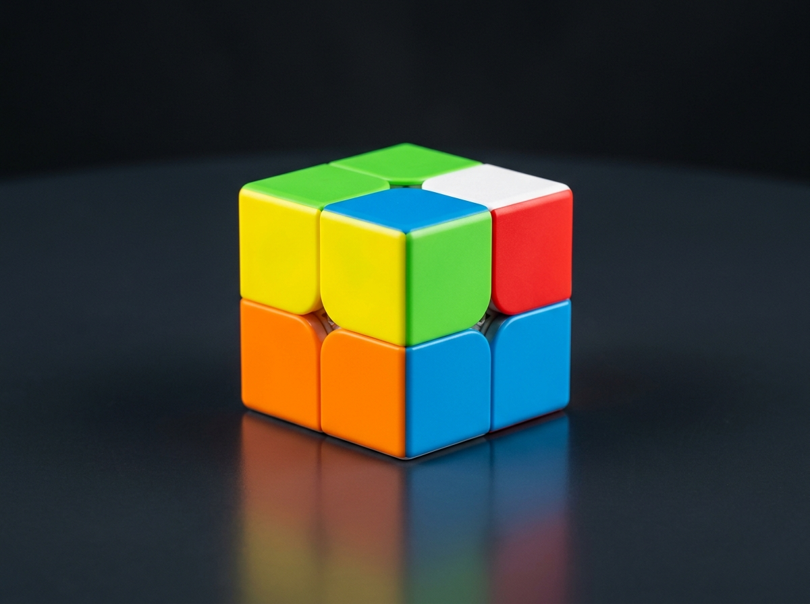
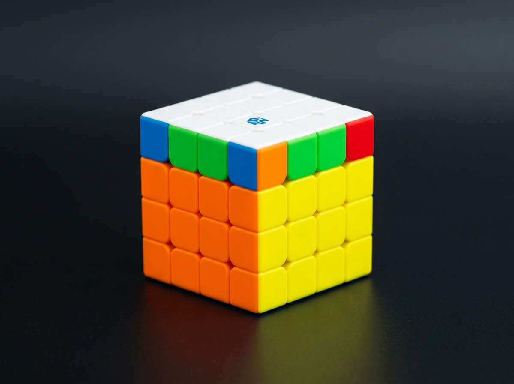
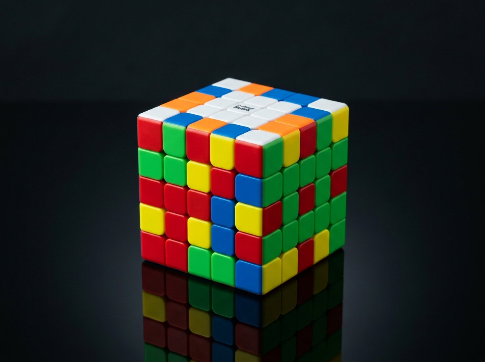
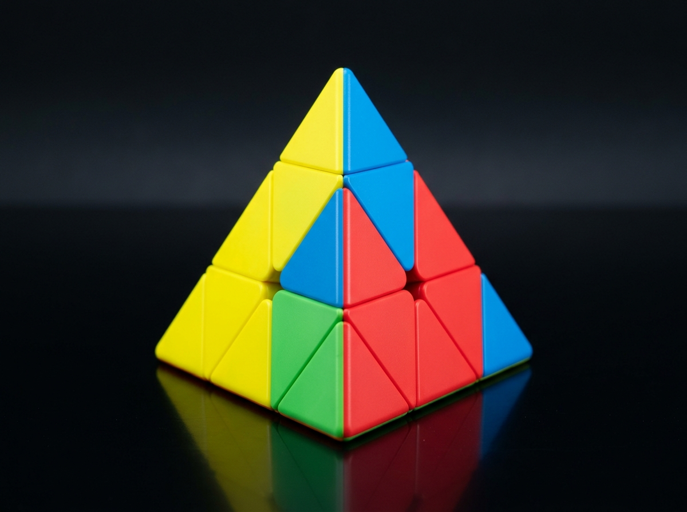
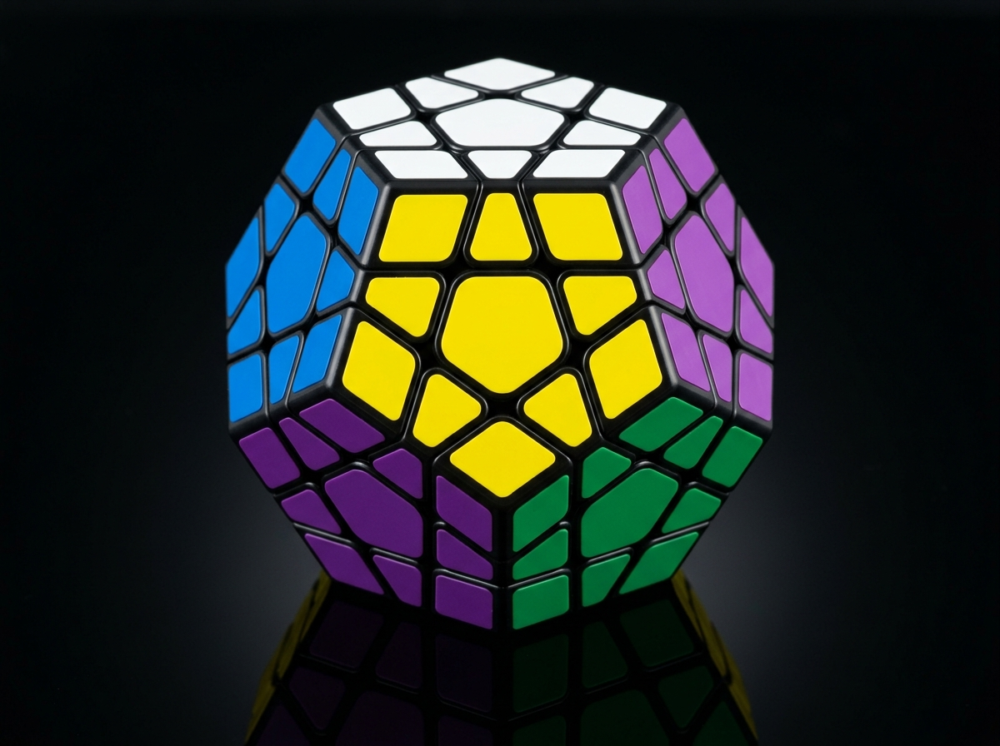

PrincipianteCubo 2x2 (Pocket Cube)
Formado únicamente por 8 esquinas. Es rápido de resolver, ideal para quienes se inician en la memorización de algoritmos como Ortega o CLL.
El mundo del cubo de Rubik
Explora las principales categorías oficiales de la World Cube Association (WCA). Conoce sus características, número de piezas y nivel de dificultad para elegir tu siguiente reto.

PrincipianteFormado únicamente por 8 esquinas. Es rápido de resolver, ideal para quienes se inician en la memorización de algoritmos como Ortega o CLL.
 Estándar WCA
Estándar WCA
El pilar central del speedcubing mundial. Cuenta con más de 43 trillones de combinaciones posibles y es la categoría reina en cualquier torneo oficial.

AvanzadoAl no tener centros fijos, introduce la necesidad de emparejar aristas y resolver centros, además de enfrentarse a las famosas paridades OLL y PLL.

Reto MayorEl hermano mayor de los cubos estándar. Recupera los centros fijos pero amplía considerablemente la cantidad de bloques a emparejar y el tiempo de concentración.

PirámidalUn tetraedro de 4 caras triangulares inventado por Uwe Mèffert. Sus giros intuitivos y giros rápidos lo convierten en una de las categorías más divertidas y veloces.

DodecaedroPuzzle de 12 caras y 50 piezas móviles. Utiliza una lógica similar al 3x3 pero expandida a una estrella de cinco puntas con un desafío visual incomparable.